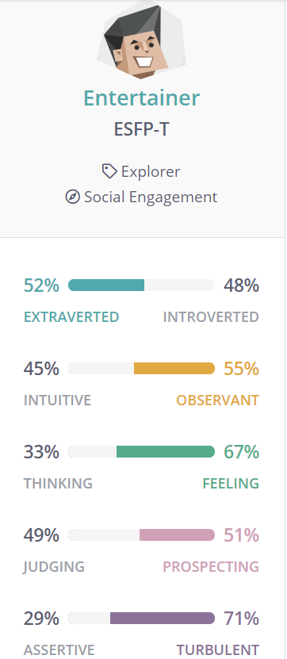

Senior Engineer Programmer
Job Description
This job advertisement is for a position as a Senior Engineer Programmer at PlaySide studios in Port Melbourne Victoria. PlaySide are looking for experienced software engineers to join their company, to assist in developing video games for PC, console and IOS/Android platforms using game engines such as UNITY. The prospect of being a game designer is appealing to me, as I have always wanted to design videos games for various platforms but have never possessed the skills to be able to do so.
Skills and Qualifications I Have
Currently, I have limited skills in HTML and CSS as well as basic Python skills. I do not have any experience with UNITY game engine or developing IOS/Android applications. I also possess great communication skills and typically work well with others on team/group projects.
Skills and Qualifications I need
To be considered for this job, I would require at least 6-7 years’ experience working with the UNITY game engine and have developed at least 1-2 major IOS/Android applications. It also requires potential applicants to possess the ability to be organised with their work and be able to multitask, whilst working towards their priorities. Furthermore, this position requires applicants to be creative, focused, motivated and have a passion for making video games.
Learning Plan
Familiarizing myself with the UNITY game engine mechanics and practicing making simple games over a period of several years would potentially provide the minimum
6-7 years of experience needed. Exposing myself to IOS/Android developer tools and practicing using said tools to create basic applications can allow me to accumulate the experience required to develop and deploy major applications on either of those platforms. To accumulate this experience in app development, it would also potentially take several years to learn and refine the necessary skills. Additionally, I would have to focus on my multitasking ability and continue to improve this capability.
Myers Briggs Type Indicator
Following the completion of the Myers Briggs Type Indicator Test, my results were indicative to be that of an ‘Entertainer’. It implies that I have a keen eye for fashion and can tell what is and isn’t attractive from the moment I see it. In terms of a teamwork setting, entertainers are usually able to talk to others to discuss options on how to best tackle a challenge, however, typically struggle to complete complex or repetitive tasks, which are often a staple in group activities.

Strengths
- Bold
- Original
- Aesthetics and Showmanship
- Practical
- Observant
- Excellenct people skills
Weaknesses
- Sensitive
- Conflict-Averse
- Easily Bored
- Poor Long-Term planners
- Unfocused
Big Five Personality Test
My top three scoring factor labels were ‘Extroversion’, ‘Intellect/Imagination’ and ‘Agreeableness’. Scoring high on ‘Extroversion’ implies that I am a typically outgoing and social individual and am not afraid of engaging with others. Scoring high on ‘Intellect/Imagination’ suggests that I have a creative mind and that I am open to new experiences. Scoring high on ‘Agreeableness’ depicts me to be an optimistic and friendly person in general. All three factor labels are integral to be able to function effectively in a team with others, as they enable great communication between other members, ability to contribute creative ideas/solutions to potential challenges and allow me to be open-minded to others’ ideas without being too critical. To be as effective as possible in a team setting, I need to be able to focus on these attributes and spend time refining them as much as possible.
Learning Styles Test
The results of the learning styles tests indicated that I am an ‘Auditory Learner’. It implies that I learn best listening to others before trying to do certain tasks. It also suggests that I find it easier to follow spoken instructions rather than written ones, indicating I am more of a passive-type learner. In a team setting, it may hinder my ability to contribute as best as I can because being an ‘Auditory Learner’ assumes I sit and wait for verbal instructions at each stage rather than reading and interpreting written ones, then applying those instructions to the task at hand. When forming a team, I should try and improve my tactile skills beforehand so that I do not struggle with more “hands-on” tasks.
Overview
My idea for an IT project is to develop an adventure/platformer game and port it to the Wii U as a Homebrew Application. ‘Homebrew’ in the context of software, is any program that isn’t officially supported by the platform/hardware it is being installed on. This can include custom apps, games or utilities to enhance user experience. Homebrew developers can share their projects with a large community of like-minded individuals as their code is typically open-sourced. This allows those individuals to install said custom apps, games or utilities to their system, provided they meet the requirements to be able to do so.
Motivation
My motivation for this project mainly from having an interest in the Wii U platform as well as just wanting to create a simple game for anyone to enjoy. I haven’t done much research into the system vulnerabilities and exploit/s that enable homebrew on the system but rather, sticking to mainly running the actual apps and games. I have always wanted to create a small game or application and share my contribution with the Homebrew community, to gain some sort of recognition and feel a sense of pride and accomplishment.
Description
I would like to create an adventure/platformer game and potentially port it to the Wii U. Currently, there are a number games and apps that can be found on the
Wii U Homebrew directory and I would like to add to the list, in hopes of reinvigorating interest in Wii U Homebrew use and development.
The game in question will have elements of adventure/platformer games such as a story, quest lines, difficulty progression in the form of levels and a UI/HUD to convey vital information to players. It would begin by conveying the main plot of the story and describe how the titular character must go on a quest to resolve the primary conflict (a staple in the adventure/platform genre). As players continue, they must go through the level, defeating the enemies they come across, gather collectibles in the level and make it to then end goal. The levels would be divided into different worlds, with the player required to defeat the boss at the end of each world to continue onto the next. Upon defeating the final boss of the game, the primary conflict will have been solved and the player rewarded in some way of completing the game.
Level design would largely be in the platformer style; having enemies, collectibles such as items to assist the player, various platforms of different sizes and shapes and other hazards to challenge the player. Collectibles such as coins can be used in an in-game shop to purchase additional bonuses that may not be found in the levels. After completing a level, more of the world map is accessible to allow the player to progress to the next level.
Each world would have a set number of levels in them, with a world boss being found after completing all the levels. Bosses will have a range of attacks which are executed in a certain pattern. They will have health points and players need to attack the boss character, whilst avoiding the enemies’ attacks to reduce the health points and reign victorious. After defeating the world boss, the player can travel to the next world and tackle the next set of levels. As the player progresses through each world, the following set of levels will have a slight increase in difficulty to ensure that it is not too easy for the player to complete them and have them grow tired of the level design and game.
Upon defeating all the world bosses, the player will have to face the final boss. Their attacks will be an amalgamation of all the world bosses’ attacks so the player must apply the skills and experience from fighting the previous bosses to defeat the final boss. After defeating them, the story will come to a resolution and the player congratulated and rewarded for playing through the game. This reward will be in the form of challenge levels, where they player must complete them, with certain restrictions such as a time limit being imposed on them.
Tools and Technologies
Game engines such as PyGame and UNITY or even programming languages such as JavaScript may be used to create the game. If I port the project to the Wii U, I need to be aware of what languages and tools it supports to ensure the best compatibility possible. Tools such as “lib_easy”, “wut” and “SDL and SDL2” are a great way for me to familiarize myself with the homebrew development process. Having access to a computer to develop my game and a Wii U with the Homebrew Launcher installed (or emulator such as CEMU) will be vital in the designing and testing processes.
Skills Required
I would need to learn how to use game engines and familiarize myself with their mechanics to be able to start the development process. Additionally, I would also need to familiarize myself with the Wii U Homebrew development tools if I do eventually end up porting my game to the platform. Using an engine such as UNITY, make take a while to learn due to its somewhat sharp learning curve. Using JavaScript, however, may be easier get the hang of and a much simpler way to develop my game.
Outcome
If successful, I will have a sense of accomplishment and pride knowing that my hard work has been worth the time and effort. I will have done so knowing I have contributed in some way (even if it is small) to the independent game developer community, as well as the Wii U Homebrew development scene and potentially gain some sort of recognition for my project.